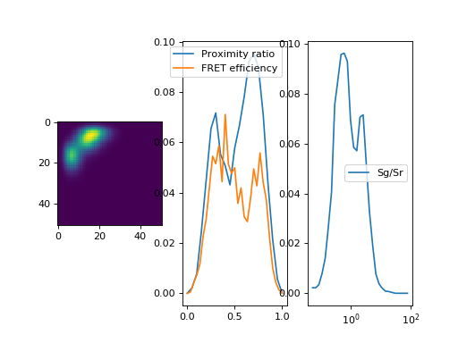

Single Molecule¶
Histogram traces¶
The function tttrlib.histogram_trace can be applied to a event time trace to
calculate the time-dependent counts for a given time window size. In
single-molecule FRET experiments such traces are particularly useful to illustrate
single-molecule bursts.
import pylab as p
import numpy as np
import tttrlib
data = tttrlib.TTTR('../../test/data/BH/BH_SPC132.spc', 'SPC-130')
mt = data.get_macro_time()
green_indeces = data.get_selection_by_channel([0, 8])
red_indeces = data.get_selection_by_channel([1, 9])
fig, ax = p.subplots(3, 1, sharex=True, sharey=False)
p.setp(ax[0].get_xticklabels(), visible=False)
green_trace = tttrlib.histogram_trace(mt[green_indeces], 40000)
red_trace = tttrlib.histogram_trace(mt[red_indeces], 40000)
m = min(len(green_trace), len(red_trace))
SgSr_ratio = (green_trace[:m] / red_trace[:m])
SgSr_ratio[np.where((green_trace[:m] + red_trace[:m]) < 2)] *= 0
ax[0].plot(green_trace, 'g', label='Green signal, Sg')
ax[1].plot(red_trace, 'r', label='Red signal, Sr')
ax[1].invert_yaxis()
ax[0].legend()
ax[1].legend()
ax[2].plot(SgSr_ratio, 'b', label='Sg/Sr')
ax[2].legend()
p.subplots_adjust(left=None, bottom=None, right=None, top=None, wspace=None, hspace=0)
p.show()
#
(Source code, png, hires.png, pdf)
{kind=link}
{kind=link}

Above, for a donor and acceptor detection channel a histogram trace for is shown in green and red.
Burst selection¶
The function tttrlib.ranges_by_time_window can be used to define ranges in
a photon stream based on time windows and a minimum number of photons within
the time windows. The function has two main parameters that determine the
selection of the ranges besides the stream of time events provided by the
parameter time:
The minimum time window size
tw_minThe minimum number of photons per time window
n_ph_min
Additional parameters to discriminate bursts are:
The maximum allowed time window
tw_maxThe maximum number of photons per time windows
n_ph_max
The the parameters of the C function and the function header are shown below .. note:
void ranges_by_time_window(
int **ranges, int *n_range,
unsigned long long *time, int n_time,
int tw_min, int tw_max,
int n_ph_min, int n_ph_max
)
For a given TTTR object the functionality is provided by the TTTR object’s
method get_ranges_by_time_window. A typical use case of this function is
to select single molecule events confocal single-molecule FRET experiments as
shown below.
import numpy as np
import tttrlib
import pylab as p
data = tttrlib.TTTR('../../test/data/BH/BH_SPC132.spc', 'SPC-130')
mt = data.get_macro_time()
time_in_ms = 1.0
tw_ranges = data.get_ranges_by_count_rate(
minimum_window_length=time_in_ms,
minimum_number_of_photons_in_time_window=20
)
start_stop = tw_ranges.reshape([len(tw_ranges) // 2, 2])
sel = list()
for start, stop in start_stop:
sel += range(start, stop)
sel = np.array(sel)
green_indeces = data.get_selection_by_channel([0, 8])
red_indeces = data.get_selection_by_channel([1, 9])
fig, ax = p.subplots(3, sharex=True, sharey=False)
p.setp(ax[0].get_xticklabels(), visible=False)
ax[0].plot(tttrlib.histogram_trace(mt[green_indeces], 30000), 'g')
ax[1].plot(tttrlib.histogram_trace(mt[red_indeces], 30000), 'r')
ax[1].invert_yaxis()
ax[2].plot(tttrlib.histogram_trace(mt[green_indeces], 30000), 'g')
ax[2].plot(tttrlib.histogram_trace(mt[red_indeces], 30000), 'r')
ax[2].plot(tttrlib.histogram_trace(mt[sel], 30000), 'b')
p.subplots_adjust(
left=None, bottom=None, right=None, top=None,
wspace=None, hspace=0
)
p.show()
(Source code, png, hires.png, pdf)
{kind=link}
{kind=link}

Above, for a donor and acceptor detection channel a histogram trace for is shown in green and red. In blue the range based selection is shown.
Saving Burst-IDs¶
STOP
Photon distribution analysis¶
The library tttrlib provides the option to compute models for single molecule histograns using Photon Distribution Analysis (PDA) for scoring of realizations of models by experimental single molecule histograms [kalinin2007].
from __future__ import division
import pylab as p
import tttrlib
import scipy.stats
import numpy as np
n_photons = 50
kw = {
"hist2d_nmax": n_photons,
"hist2d_nmin": 10,
"background_ch1": 2.3,
"background_ch2": 1.2,
}
pda = tttrlib.Pda(**kw)
# The parameters can also be set as attributes
pda.background_ch1 = 2.0
pda.background_ch2 = 5.0
# Here, we use scipy and a poisson distribution to compute an pF.
# For a real analysis pF needs to be estimated from the experiment.
mu = 20 # expectation value for the number of photons
dist = scipy.stats.poisson(mu)
x = np.arange(0, n_photons)
pF = dist.pmf(x)
pda.setPF(pF)
# Now we define a set of species with associated amplitudes
amplitudes = [0.33, 0.33, 0.33]
# probabilities_ch1 is the theoretical probability of detecting a photon
# in the first channel. In the PDA manuscript this is also called pG
probabilities_ch1 = [0.75, 0.4, 0.2]
pda.set_amplitudes(amplitudes)
pda.set_probabilities_ch1(probabilities_ch1)
# Alternatively the spectrum of amplitudes and probabilities
# can be set as an interleaved array [a1, p1, a2, p2, ...]
p_spectrum_ch1 = np.dstack([amplitudes, probabilities_ch1]).flatten()
pda.spectrum_ch1 = p_spectrum_ch1
# The computed distribution of photons in channel 1 and channel 2
# is given by the attribute s1s2. This attribute is convolved with
# the probability of detecting a photon pF and the specified background
s1s2 = pda.s1s2
# A one dimensional representation of the s1s2 matrix if obtain
# by a function that projects the pairs of photons. Any python function
# accepting at least two arguments can be used
proximity_ratio = lambda ch1, ch2: ch2 / (ch1 + ch2)
# The python function is used to set the attribute `histogram_function`
pda.histogram_function = proximity_ratio
# The method get_1dhistogram of the Pda object returns a 1D histogram
# of the s1s2 array for the specified function
x_pr, y_pr = pda.get_1dhistogram(
log_x=False,
xmin=0.0,
xmax=1.0,
nbins=21
)
# functions, e.g., the FRET efficiency, that require additional parameters
# can be passed to the Pda object by defining a function with additional
# arguments. Note, potential division by zero need to be handled. Above,
# zero divisions were not handled as overall minimum number of photons was
# set to 10 (hist2d_nmin) and the histogram starts be be computed from the
# first channel.
def fret_efficiency(ch1, ch2, phiD=0.8, phiA=0.32, det_ratio=0.32):
return 1.0 / (1. + phiD / phiA * det_ratio * ch2 / ch1)
pda.histogram_function = fret_efficiency
x_eff, y_eff = pda.get_1dhistogram(
log_x=False,
xmin=0.0,
xmax=1.0,
nbins=31
)
# Histograms with a logarithmic scale are computed by setting `log_x`
# to True. When the option skip_zero_photon is set to False the first
# column and row of the s1s2 matrix (zero photons in ch1 or ch2) is used
# in this case potential division by zeros in the histogram function
# need to be handled. The default value for skip_zero_photon is True.
sg_sr = lambda ch1, ch2: max(1, ch1) / max(1, ch2)
pda.histogram_function = sg_sr
x_sgsr, y_sgsr = pda.get_1dhistogram(
log_x=True,
xmin=0.05,
xmax=80.0,
nbins=31,
skip_zero_photon=False
)
fig, ax = p.subplots(nrows=1, ncols=3)
ax[0].imshow(s1s2)
ax[1].plot(x_pr, y_pr, label='Proximity ratio')
ax[1].plot(x_eff, y_eff, label='FRET efficiency')
ax[1].legend()
ax[2].semilogx(x_sgsr, y_sgsr, label='Sg/Sr')
ax[2].legend()
p.show()
(Source code, png, hires.png, pdf)
{kind=link}
{kind=link}

To create a PDA model first create an instance of the tttrlib.Pda class. The
Pda class implements a Photon Distribution Analysis algorithm for photons that
are registed in two detection channels (channel 1 and channel 2). These two channels
can be any channel type. In a FRET experiment channel 1 (ch1) and channel 2 (ch2)
are typically the green and red detection channel, respectively. In an anisotropy
PDA experiment the two channels can be the parallel and perpendicular detection
channel. Using the theoretical probability for detecting a photon in the first
detection channel as an input (in the original manuscript this is called pG) the
number of photons in the first and the second detection channel are computed.
Hereby, the algorithm considers the background fluorescence in the two detection
channels. The measured signal consists of fluorescence (F) and background (B)
contributions (S=F+B).
To compute a PDA histogram, first, create an instance of the tttrlib.Pda class.
When you create a new instance, you can specify a set of parameters that are of
relevance.
import tttrlib
n_photons = 50
kw = {
"hist2d_nmax": n_photons,
"hist2d_nmin": 10,
"background_ch1": 2.3,
"background_ch2": 1.2,
}
pda = tttrlib.Pda(**kw)
The Pda class will compute a matrix here called s1s2 that will contain the
probabilities of detecting a photon in ch1 and ch2. The indices of the matrix correspond
to the number of photons, the matrix values to the probability. The parameter
hist2d_nmax specifies up to wich maximum number of photons this matrix is
computed. The parameter hist2d_nmin specifies the minimum number of photons in
this matrix which will be considered in later steps. The parameter background_ch1
and background_ch2 specify the background count rate in the two channels.
The parameters can also be changed after the Pda object is created.
pda.background_ch1 = 2.0
pda.background_ch2 = 5.0
pda.hist2d_nmin = 5
pda.hist2d_nmax = 60
To compute the PDA histogram intensity distribution of the fluorescence p(F), needs to be specified. The intensity distribution of the fluorescence, P(F), can be obtained from the total measured signal intensity distribution P(S) by deconvolution assuming that the background signals obey Poisson distributions. In this description we simply compute a Poisson distribution for p(F).
import scipy.stats
mu = 20 # expectation value for the number of photons
dist = scipy.stats.poisson(mu)
x = np.arange(0, n_photons)
pF = dist.pmf(x)
pda.setPF(pF)
The last statement in the code above assigns the distribution p(F) to the Pda object.
Next, a set of species with associated amplitudes with corresponding theoretical probabilities of detecting a photon in the first channel. This can be done by either assigning the amplitudes and the probabilities separately to the Pda object
amplitudes = [0.5, 0.5]
probabilities_ch1 = [0.8, 0.2]
pda.set_amplitudes(amplitudes)
pda.set_probabilities_ch1(probabilities_ch1)
or by assigning a spectrum that consists of interleaved amplitudes and probabilities
p_spectrum_ch1 = np.dstack([amplitudes, probabilities_ch1]).flatten()
pda.spectrum_ch1 = p_spectrum_ch1
The spectrum is interleaved array [a1, p1, a2, p2, …] where ai refers to
amplitudes and p1 refers to probabilities of registering a photon in the first
channel. The probabilities probabilities_ch1 are the theoretical probability
of registering a photon in the first channel. In a FRET experiment the probability
relates to the FRET efficiency by
where \(g_G\), \(g_R\) are the detection efficiencies in the green and red detection channel, respectively. \(\Phi_A\), \(\Phi_D\) are the fluorescence quantum yield of the acceptor and the donor, respectively. \(\alpha\) is the cross-talk from the donor to the acceptor channel, and \(E\) is the FRET efficiency.
The computed distribution of photons in ch1 and ch2 is accessed by the attribute
s1s2.
s1s2 = pda.s1s2
The matrix s1s2 is computed when the attributed is accessed. The matrix is only
updated if a parameter of relevance is changed and the matrix is accessed.
In a PDA 2D analysis this matrix is often reduced in dimensionality to represent
the model and score against the data. For this dimensionality reduction
tttrlib.Pda offers a method. However, first, it needs to be specified how the
matrix is reduced in dimensionality. For that, a function needs to be specified
and assigned to the object. Any python function with a least two arguments can
be used for that. The first argument always corresponds to ch1, the second
argument to ch2. For instance, a histogram of the proximity ration can be computed
by first defining a corresponding function and then creating a histogram using the
method get_1dhistogram.
s1s2 = pda.s1s2
# A one dimensional representation of the s1s2 matrix if obtain
# by a function that projects the pairs of photons. Any python function
# accepting at least two arguments can be used
proximity_ratio = lambda ch1, ch2: ch2 / (ch1 + ch2)
# The python function is used to set the attribute `histogram_function`
pda.histogram_function = proximity_ratio
# The method get_1dhistogram of the Pda object returns a 1D histogram
# of the s1s2 array for the specified function
x_pr, y_pr = pda.get_1dhistogram(
log_x=False,
xmin=0.0,
xmax=1.0,
nbins=21
)
The arguments of get_1dhistogram define the range and the resolution of the
histogram.
Functions, e.g., the FRET efficiency, that require additional parameters can be passed to the Pda object by defining a function with additional arguments. Note, potential division by zero need to be handled.
def fret_efficiency(ch1, ch2, phiD=0.8, phiA=0.32, det_ratio=0.32):
return 1.0 / (1. + phiD / phiA * det_ratio * ch2 / ch1)
pda.histogram_function = fret_efficiency
x_eff, y_eff = pda.get_1dhistogram(
log_x=False,
xmin=0.0,
xmax=1.0,
nbins=31
)
Histograms with a logarithmic scale are computed by setting log_x to True.
When the option skip_zero_photon is set to False the first column and row of
the s1s2 matrix (zero photons in ch1 or ch2) is used. In this case potential division
by zeros in the histogram function need to be handled. The default value for
skip_zero_photon is True.
sg_sr = lambda ch1, ch2: max(1, ch1) / max(1, ch2)
pda.histogram_function = sg_sr
x_sgsr, y_sgsr = pda.get_1dhistogram(
log_x=True,
xmin=0.05,
xmax=80.0,
nbins=31,
skip_zero_photon=False
)
Finally, the 2D counting histogram and the 1D representations can be plotted.
fig, ax = p.subplots(nrows=1, ncols=3)
ax[0].imshow(s1s2)
ax[1].plot(x_pr, y_pr, label='Proximity ratio')
ax[1].plot(x_eff, y_eff, label='FRET efficiency')
ax[1].legend()
ax[2].semilogx(x_sgsr, y_sgsr, label='Sg/Sr')
ax[2].legend()
p.show()
Note
To score models against the data either the 2D histogram or the 1D representation can be used. The scoring is described elsewhere [kalinin2007].